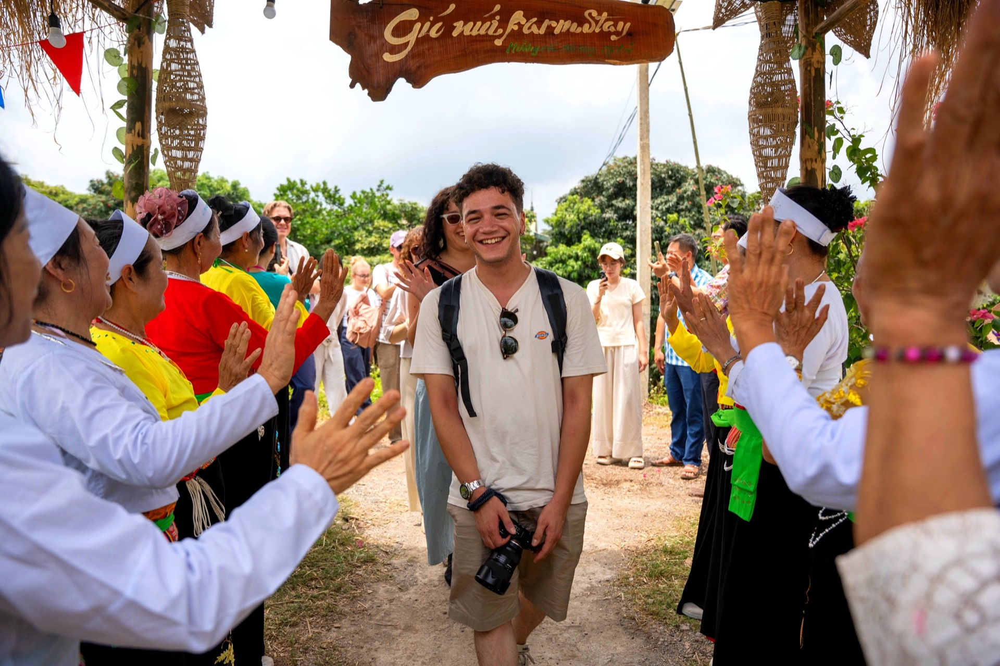
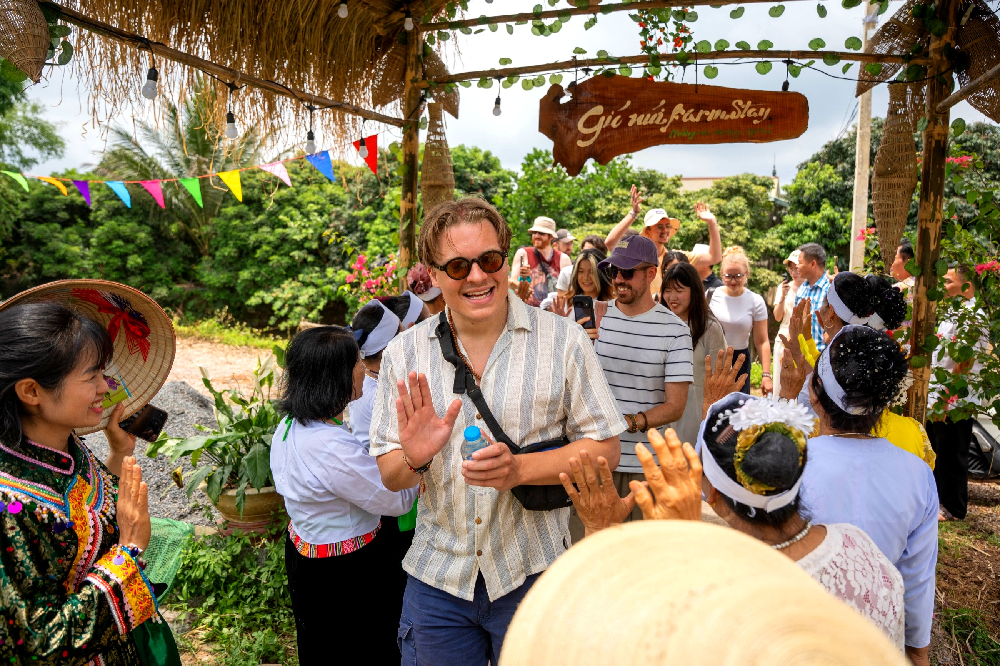

Loại hìnhTypeType
FarmstayFarmstayFarmstay

Gió Núi Farmstay là điểm trải nghiệm nông nghiệp mang đậm nếp sống Mường truyền thống, tọa lạc tại khu vực Đồi Dùng – nơi gió từ các triền đồi thổi qua vườn tược quanh năm mát mẻ. Gia đình ông Nguyễn Quốc Tuấn và bà Lê Thị Hải Yến vận hành mô hình Vườn – Ao – Chuồng theo đúng lối canh tác truyền thống của người Mường vùng bán sơn địa, từ chăm bón rau màu, nuôi gà vịt đến thả cá trong ao làng.
Điểm đặc trưng của Gió Núi Farmstay là không gian trưng bày ngoài trời với nhiều dụng cụ nông nghiệp và ngư nghiệp cổ được gia đình lưu giữ qua nhiều thế hệ – từ cái bừa, cái cày, rổ đánh cá, đến lờ lợp và các vật dụng gắn liền với đời sống ruộng đồng. Đây là "bảo tàng sống" giản dị, nơi du khách có thể cầm, ngắm và nghe kể câu chuyện về từng hiện vật.
Du khách đến đây không chỉ được hít thở không khí trong lành của làng Mường mà còn được tham gia trực tiếp vào nhịp sống nông nghiệp mỗi ngày – cho cá ăn buổi sớm, hái rau vườn nhà, thăm chuồng gà chuồng vịt – những trải nghiệm bình dị nhưng lắng đọng.
Gio Nui Farmstay is an agricultural experience point deeply rooted in traditional Muong life, located in the Doi Dung area – where winds from the hills keep gardens cool year-round. Mr. Nguyen Quoc Tuan and Ms. Le Thi Hai Yen's family operates the "Garden – Pond – Livestock" model according to the traditional farming methods of the Muong people in the semi-mountainous region, from cultivating vegetables, raising chickens and ducks, to stocking fish in the village pond.
A unique feature of Gio Nui Farmstay is its outdoor exhibition space, showcasing numerous ancient farming and fishing tools preserved by the family for generations – from harrows and plows to fishing baskets, traps, and other implements essential to rural life. This is a simple "living museum" where visitors can touch, admire, and hear the stories behind each artifact.
Here, visitors not only breathe the fresh air of the Mường village but also directly participate in the daily rhythm of agricultural life – feeding fish in the morning, harvesting garden vegetables, visiting chicken and duck coops – simple yet profound experiences.
Le Gió Núi Farmstay est un point d'expérience agricole profondément ancré dans le mode de vie traditionnel Mường, situé dans la région de Đồi Dùng – où les vents des collines maintiennent les jardins frais toute l'année. La famille de M. Nguyễn Quốc Tuấn et Mme Lê Thị Hải Yến gère le modèle « Jardin – Étang – Élevage » selon les méthodes agricoles traditionnelles du peuple Mường de la région semi-montagneuse, de la culture des légumes à l'élevage de poulets et de canards, en passant par l'alevinage de poissons dans l'étang du village.
Une caractéristique unique du Gio Nui Farmstay est son espace d'exposition en plein air, présentant de nombreux outils agricoles et de pêche anciens conservés par la famille depuis des générations – des herses et charrues aux paniers de pêche, nasses et autres ustensiles essentiels à la vie rurale. C'est un simple "musée vivant" où les visiteurs peuvent toucher, admirer et entendre les histoires derrière chaque artefact.
Ici, les visiteurs ne se contentent pas de respirer l'air frais du village Mường, mais participent aussi directement au rythme quotidien de la vie agricole – nourrir les poissons le matin, cueillir les légumes du jardin, visiter les poulaillers et les canards – des expériences simples mais profondes.
| Tham quan trưng bày nông cụ cổDiscover the Ancient Farming Tools ExhibitionDécouvrez l'exposition d'outils agricoles anciens | Giới thiệu dụng cụ nông – ngư nghiệp truyền thống người MườngLearn about traditional Mường agricultural and fishing tools.Découvrez les outils agricoles et de pêche traditionnels du peuple Mường. |
| Cho cá ăn, thăm aoPond Life: Feed Fish & ExploreVie de l'étang : nourrissez les poissons et explorez | Trải nghiệm ngư nghiệp dân gian bên ao làngExperience traditional folk fishing by the tranquil village pond.Vivez une expérience de pêche folklorique traditionnelle au bord de l'étang paisible du village. |
| Hái rau vườn nhàPick Garden VegetablesCueillette de Légumes du Jardin | Tham gia thu hoạch rau theo mùaParticipate in seasonal vegetable harvesting.Participez à la récolte saisonnière de légumes. |
| Thăm chuồng gà, vịtMeet the Chickens and DucksRencontrez nos poulets et canards | Tìm hiểu chăn nuôi theo lối truyền thốngLearn about traditional livestock farming.Découvrez l'élevage traditionnel. |
| Ẩm thực địa phươngAuthentic Local FlavorsSaveurs locales authentiques | Phục vụ theo đặt trướcServed by prior reservationService sur réservation préalable |
| Đón khách đoànGroup WelcomeAccueil de groupes | Nhóm nhỏ và đoàn tham quan có hướng dẫnGuided tours for small groups and delegations.Visites guidées pour petits groupes et délégations. |


Gió Núi Farmstay hướng tới trở thành điểm trải nghiệm nông nghiệp bản địa tiêu biểu của Mường Cốc, nơi du khách – đặc biệt là học sinh, sinh viên và gia đình – có thể hiểu sâu hơn về giá trị của mô hình canh tác Vườn – Ao – Chuồng truyền thống. Gia đình mong muốn phát triển thêm hoạt động giáo dục nông nghiệp gắn với bảo tồn nông cụ cổ, đồng thời cải thiện không gian đón tiếp để phục vụ các đoàn khách lớn hơn. Điểm đến Du lịch cộng đồng Mường Cốc, Xã Mỹ Đức – Thành phố Hà NộiGió Núi Farmstay aims to become a quintessential indigenous agricultural experience in Mường Cốc, where visitors – especially students and families – can gain a deeper understanding of the value of the traditional "Garden – Pond – Cage" farming model. The family wishes to develop additional agricultural education activities linked to the preservation of ancient farming tools, while also improving the reception area to accommodate larger groups. A Mường Cốc Community Tourism Destination, My Duc Commune – Hanoi City.Gió Núi Farmstay vise à devenir un point d'expérience agricole indigène emblématique de Mường Cốc, où les visiteurs – en particulier les élèves, les étudiants et les familles – peuvent approfondir leur compréhension de la valeur du modèle agricole traditionnel "Jardin – Étang – Enclos". La famille souhaite développer davantage d'activités d'éducation agricole liées à la conservation des outils agricoles anciens, tout en améliorant l'espace d'accueil pour servir des groupes plus importants. Une destination de tourisme communautaire de Mường Cốc, commune de My Duc – ville de Hanoi.